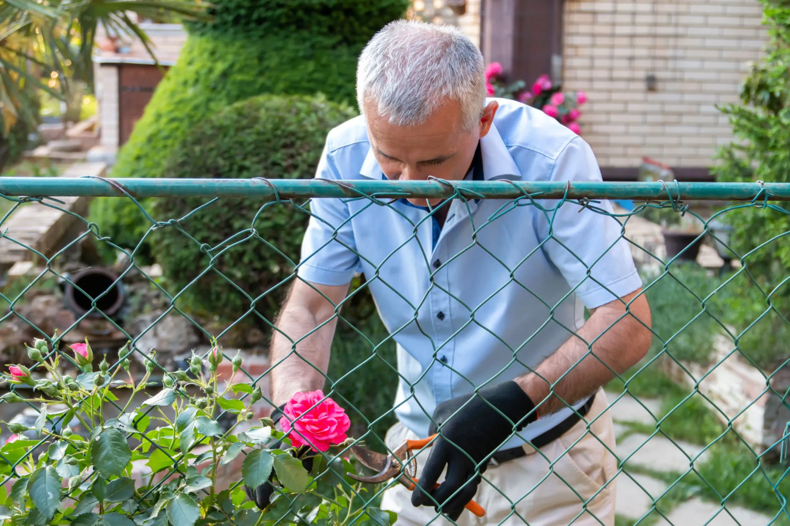
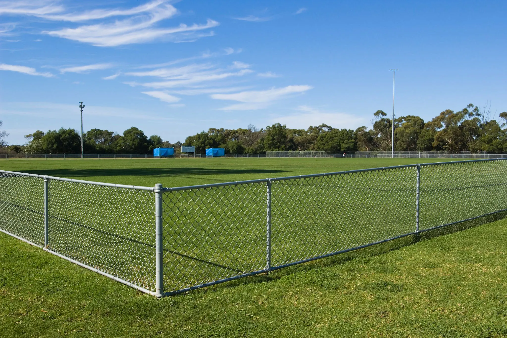

When on the hunt for a fence that is durable and offers protection, you may have stumbled on the chain-link fence option. It's an instant classic that is used in so many industrial and commercial areas, but even homeowners take advantage of installing a chain-link fence on their property at times.
However, despite the durability that this kind of fencing offers, there will inevitably come a time when it needs to be replaced. Over the years, sections or even the entire fence will become damaged and should be replaced by an expert who has knowledge about chain-link fences and what to do. This ensures that your chain-link fence replacement is done right and will last for many more years to come. These are some big indicators that it may be time to replace all or part of your chain-link fence.
Rusting Out
One sign you should always be on the lookout for with any kind of metal fencing, including your chain-link fence, is rust. Rust is an indicator that the structural integrity of your fence has been compromised and will only get worse, meaning that it won't keep you as protected as you wanted when it was initially installed. If only small parts of your fence are rusted, those can be replaced individually. Just make sure you remove moisture from the area to prevent it from becoming a problem again.

Broken Posts
Once the posts on your chain-link fence begin to break, it will lead to a host of other problems. This includes allowing the chain-link material to become loose, overall resulting in a less secure fence. If left for long enough, the weight of a broken post can even pull on the rest of the fence, removing the chain-link sections entirely. Get a pro to come in and replace your posts in order to restore your fence to its former glory.

Worn-Out Links
While the posts are responsible for creating the overall structure of your fence, the links are equally as important. The links are what actually create security and close the area off. So if you notice that your links are coming apart or otherwise wearing out, it's a good sign that you should replace them and patch up any weak points that could compromise your security. A professional can get this done fairly quickly so don't delay in contacting your local fencing contractor today.
Don't wait until your fence fails completely. Regular inspections can catch rust, broken posts, and worn links early — saving you time and money on a full replacement.
Need a chain-link fence replacement or upgrade? At Kestrel Metal, we supply premium galvanized and PVC-coated chain link fencing along with complete fittings and accessories. Our experienced team provides technical support and competitive pricing with worldwide shipping. Request a Quote today — we respond within 24 hours with detailed specifications and pricing for your project.